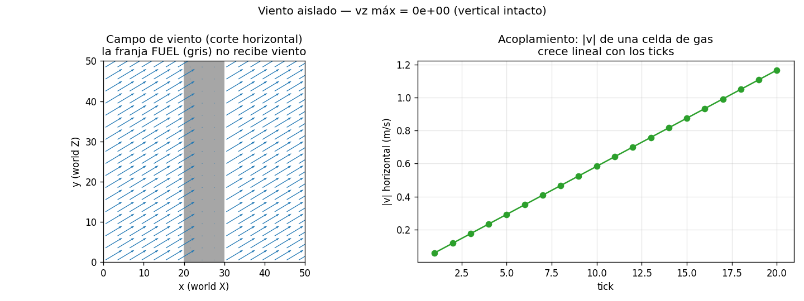
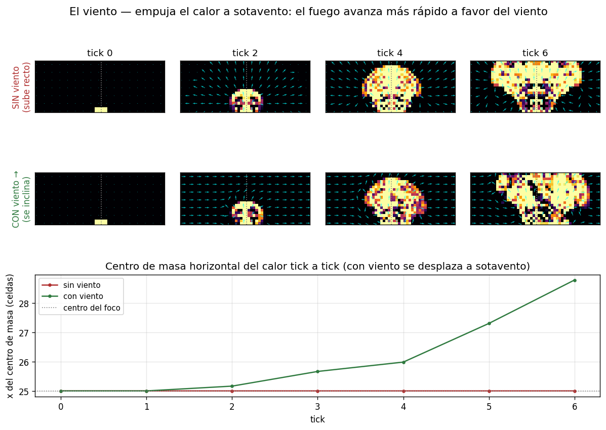
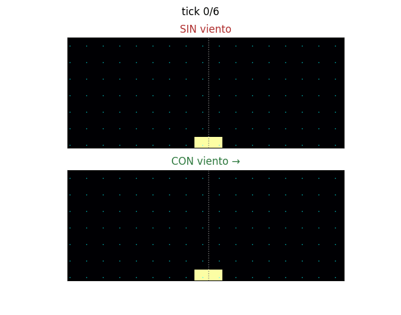

La primera fuerza del tick: un empuje horizontal uniforme sobre
el aire. Es lo que hace que el fuego corra más rápido a favor del viento.
Sencilla, pero con una convención de ejes que hay que respetar.
Qué hace la función
La función real del motor es
aplicarViento. A cada celda de
gas le suma una pequeña aceleración horizontal, proporcional al viento global,
al paso de tiempo y a un factor de acoplamiento:
velocity.x += viento.x · dt · acoplamiento
velocity.y += viento.y · dt · acoplamiento
acoplamiento = 0.1 por defecto (el aire se ajusta con inercia, no de golpe)
Convención de ejes (crítica). El motor guarda el viento en su
convención interna: viento.x → eje X del mundo (velocity.x),
viento.y → eje Z del mundo (velocity.y, no.z). La componente vertical velocity.zno se
toca nunca aquí: es competencia exclusiva de la
flotabilidad. Sumar viento horizontal a la vertical
empujaría el humo hacia arriba en lugar de a un lado — un bug catastrófico.
Dos propiedades: filtro de estado y acumulación

Izquierda: el viento sopla en diagonal, pero la franja de
combustible sólido (FUEL, en gris) no recibe empuje — el viento
solo tiene sentido sobre los gases (AIR/BURNING/SMOKE). Derecha: la
velocidad de una celda de gas crece linealmente con los ticks: cada
paso suma un poco más (acoplamiento), el aire va cogiendo el viento.
Qué demuestra
Dos cosas. (1) Filtro de estado: el viento empuja gases, no el
combustible sólido (una ráfaga no mueve un tronco). (2) Acumulación:
no impone una velocidad, la acelera poco a poco — por eso |v| crece
recta con los ticks. Y la vertical queda intacta (vz = 0).
¿Para qué sirve? Inclina el penacho
Por sí sola, esta fuerza solo cambia números en el campo de velocidad. Su
efecto se ve cuando entra en el resto del paso de fluido: el empuje horizontal
se suma a la circulación que crea la presión, y la
advección transporta el calor por ese campo
sesgado. Resultado: el penacho se inclina a sotavento. Comparamos dos mundos
idénticos, uno sin viento y otro con un viento suave hacia la derecha:

Corte vertical, foco caliente en la base. Arriba (sin viento): el
penacho sube recto y simétrico. Abajo (con viento →): el mismo
penacho se inclina a sotavento; su centro de masa se desplaza a la
derecha tick a tick (curva inferior).

Animado: a la izquierda recto, a la derecha inclinándose con el
viento.
Qué demuestra
El viento sesga el transporte del calor a favor de su dirección.
En la propagación del incendio, esto se traduce en que el fuego avanza más
rápido a sotavento — el factor que más condiciona dónde colocar un cortafuegos.
Nota. El viento del experimento es suave a propósito. Con un
viento fuerte la advección barrería el penacho fuera del dominio antes de que
se forme; y, como en el capstone, pasados
~6–8 ticks el experimento aislado se desestabiliza. Nos quedamos con la
inclinación ya visible.